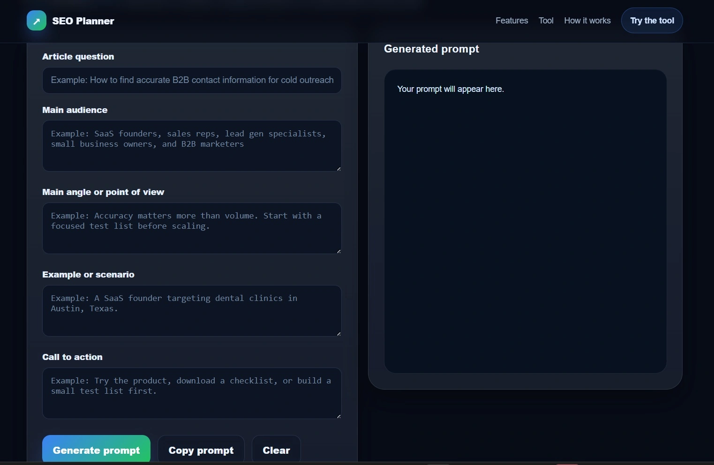

Stop Targeting Keywords: How to Build an Answer-Based SEO Strategy
Published on July 2, 2026
Search engine optimization is often misunderstood. Many teams focus on high-volume keywords, looking for gaps in competitor rankings to claim more search traffic. However, ranking for a keyword does not guarantee results.
The real opportunity is the Answer Gap.
A keyword gap shows you what you are missing, but an answer gap shows you where you are failing the user. Even when a site ranks for the right keyword, they often miss the core question. They answer the what, but they ignore the why and the how.

The Answer-Based SEO Framework
My approach focuses on four areas that competitors frequently overlook. When you address these, you stop competing on domain authority and start competing on utility.
- Missing buyer questions: Identify what the user searches for immediately after their main query. These are the specific problems that prevent a user from moving to the next stage.
- Skipped objections: List the reasons a user might hesitate to convert on the competitor page. If a competitor page leaves these objections unaddressed, you have a clear opening.
- The Article Brief Angle: Use your findings to build a structure that answers those objections before the user even scrolls down. This increases engagement and time on page.
- Intent alignment: Audit the content to ensure it solves the problem rather than just repeating the keyword.
Building in Public: My Process
I am not a developer. However, building small tools to solve these SEO problems is teaching me the mechanics of search engines faster than reading any guide.
I recently started building an Answer-Based SEO Planner to automate this framework.
- What I built: A tool that maps buyer questions against competitor content to highlight the specific answer gaps.
- What broke: API integration was my main challenge. It forced me to read documentation and refine how I pull search data.
- What I learned: I now understand how search data is structured and how to prioritize content based on intent rather than just search volume.
Why You Should Build Your Own Tools
You do not need a background in programming to start. Building your own tools forces you to simplify your SEO strategy. It turns abstract concepts into a system you can repeat.
If you are an SEO specialist or a content creator, I suggest you try building a small tool. Start with a single, repetitive task you perform every week and find a way to automate it.
What SEO tasks are you planning to automate this week? Drop a comment on my LinkedIn post and let us help each other grow.